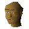

Hamid

| Config name | duel_monk |
| NPC id | 1008 |
| Combat level | hidden |
| Options | Talk-to |
| Wander range | 2 tiles from spawn |
| Defined in | scripts/minigames/game_duelarena/configs/duelarena.npc |
Hamid
A holy man.
Show all 1 spawn on the world map → Open in knowledge graph →
Locations
| Area | Coordinates | Level | Count | Map |
|---|---|---|---|---|
| Exam Centre | 3375, 3285 | 0 | 1 | view |
Dialogue
PlayerHi!
HamidHello traveller. How can I be of assistance?
PlayerCan you heal me?
HamidYou'd be better off speaking to one of the nurses.
HamidThey are so... nice... afterall!
PlayerWhat's a Monk doing in a place such as this?
HamidWell don't tell anyone but I came here because of the nurses!
PlayerReally?
HamidIt beats being stuck in the monastery!
PlayerWhich monastery do you come from?
HamidI belong to a monastery north of Falador.
PlayerYou're a long way from home?
HamidYeh. I miss the guys.
Referenced in scripts
scripts/minigames/game_duelarena/scripts/hamid.rs2